<!-- .slide: data-state="front hide-controls" --> <div id="title">Computer Systems</div> <div id="subtitle">Data Privacy and Security</div> <div id="date">Data Science and Management (DASMA)</div> --- ## What is a Computer? <div class="content-center"> A computer is a machine that can be programmed to carry out sequences of arithmetic or logical operations automatically. <br/> <div class="fragment" data-fragment-index="0"> To understand how a computer works, we need to understand two main components: 1. **Hardware**: the physical components of a computer 2. **Software**: the programs that run on the hardware <br/> </div> <div class="fragment" data-fragment-index="1"> And to manage the complexity of running multiple programs on the hardware, we need: 3. **Operating Systems**: software that manages hardware and software resources <br/> </div> <div class="fragment" data-fragment-index="2"> To deploy and manage these systems at scale, we may use: 4. **Virtualization**: creating multiple virtual machines on physical hardware 5. **Containerization**: packaging applications with their dependencies </div> </div> --- <!-- .slide: data-state="break-blue hide-controls" --> # Hardware --- ## What is inside a Computer? <div class="content-center"> A (still accurate) high-level overview of a computer: <br/> <br/> <div class="cell-center"> <img src="img/computer-architecture-basic.drawio.png" style="width: 70%;"> <p style="text-align: center;">von Neumann architecture (1945)</p> </div> </div> --- ## A More Detailed Overview <div class="content-center"> <div class="cell-center"> <img src="img/computer-architecture.drawio.png" style="width: 60%;"> </div> </div> --- ## Motherboard <div class="content-center"> <div class="cell-center"> <p>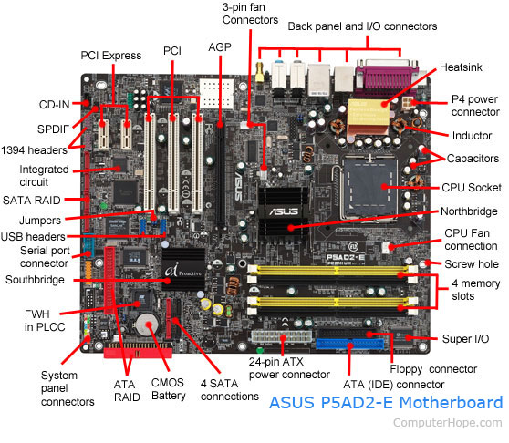</p> </div> </div> --- ## Modern System On Chip (SoC) <div class="content-center"> Modern SoCs integrate the CPU, GPU, storage, and other components on a single chip: <br/> <div class="cell-center"> <img src="img/soc.drawio.png" style="width: 70%;"> </div> </div> --- ## CPU (**C**entral **P**rocessing **U**nit) <div class="content-center"> <div class="cell-center" style="padding-top: 10px;"> <img src="img/cpu-alt.drawio.png" style="width: 1100px;"> </div> <div class="fragment" data-fragment-index="0"> - The **Arithmetic Logic Unit (ALU)** performs arithmetic operations (such as addition and subtraction) and logical operations (like AND, OR, NOT) on binary data. - The **Control Unit** coordinates the operations of the CPU, managing the flow of data and instructions (e.g., determining the next instruction to execute, performing the fetch-decode-execute cycle). - The **Registers** are a few small (up to 64 bits wide), fast (<0.5 nanosecond) volatile memory locations that store data and instructions for processing. - The **Cache** is a high-speed (1-16 nanoseconds) but limited (e.g., 1-16 MB) volatile memory that stores frequently used data to speed up access. </div> </div> --- ## RAM (**R**andom **A**ccess **M**emory) <div class="content-center"> <div class="fragment" data-fragment-index="0"> - The main (volatile) memory of the computer, where data and instructions are stored for processing before being loaded into the CPU. - Implemented with Dynamic Random Access Memory (DRAM) chips, based on capacitors (require regular refreshes to maintain data). - The capacity of RAM is nowadays on the order of gigabytes (GB) or terabytes (TB). - Much faster ($1000-100000\\times$) than secondary storage (e.g., hard drives, SSDs) but significantly slower ($10-100\\times$) than CPU registers. - Like a huge array of consecutive bytes, each identified by its address (e.g., $0, 1, 2, \\ldots, 2^{64}-1$). </div> </div> --- ## Disks <div class="content-center"> Permanent storage devices used to store data and programs for long-term use: <br/> <div class="fragment" data-fragment-index="0"> - **Hard Drives (HDDs)**: use spinning disks to store data, quite slow speed (~200 MB/s) but large capacity (up to 20 TB). - **Solid-state disks (SSDs)**: use flash memory to store data, much faster speed (~1-4 GB/s) but smaller capacity (up to 2 TB). </div> <div class="fragment" data-fragment-index="1"> Disks can be connected to the computer in different ways: - USB (Universal Serial Bus): used for external disks. - SATA (Serial Advanced Technology Attachment): used for mechanical disks and older SSDs. - NVMe (Non-Volatile Memory Express): used for modern SSDs. <br/> </div> </div> --- ## Memory Hierarchy <div class="content-center"> <div class="cell-center"> <p>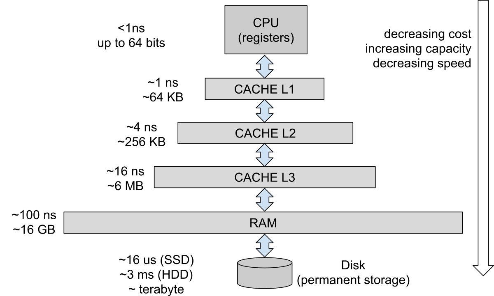</p> </div> <br/> Fast memory is expensive, hence a complex hierarchy is used to compromise between cost and performance: larger data is stored in slower, cheaper memory, that, when needed, is loaded into faster, more expensive memory in smaller amounts. </div> --- <!-- .slide: data-state="break-blue hide-controls" --> # Software --- ## How can a Computer Execute a Program? <div class="content-center"> <div class="cell-center"> <img src="img/cpus.drawio.png" style="width: 80%;"> </div> <div class="fragment" data-fragment-index="0"> The **CPU** is responsible for executing the program code: - It interprets the instructions one by one from the **RAM** - The instructions must be written in **machine code** <br/> </div> <div class="fragment" data-fragment-index="1"> The machine code is: - **Low level**: relatively simple operations - **CPU specific**: different CPUs have different machine codes - **Binary format**: humans struggle to read it </div> </div> --- ## Machine Code: Intel/AMD vs ARM <div class="content-center"> A simple sequence of instructions to compute the sum of two integer numbers would look like this in machine code: <table> <tr> <td>Intel/AMD 64 bit machine code</td> <td></td><td></td> <td>ARM 64-bit machine code</td> </tr> <tr> <td><pre><code>f3 0f 1e fa 55 48 89 e5 89 7d fc 89 75 f8 8b 55 fc 8b 45 f8 01 d0 5d c3 </code></pre></td> <td></td><td></td> <td><pre><code>ff 43 00 d1 e0 0f 00 b9 e8 0f 40 b9 e9 0f 40 b9 00 7d 09 1b ff 43 00 91 c0 03 5f d6 </code></pre></td> </tr> </table> <br/> <div class="fragment" data-fragment-index="0"> - Machine code is binary (shown here in hexadecimal for readability) - Intel/AMD processors share the same machine code format - Other processors like ARM use entirely different machine code formats </div> </div> --- ## Writing Low Level Code is Impractical <div class="content-center"> Major problems when working with machine/assembly code are: <br/> <div class="fragment" data-fragment-index="0"> 1. Programmers have to write a lot of code to perform simple operations 2. Code is not portable across different hardware platforms 3. Programmers have to deal with hardware details 4. Programming in machine/assembly code is hard and error-prone <br/> </div> <div class="fragment" data-fragment-index="1"> **Yet, CPUs only understand and run machine code.** <br/> </div> <div class="fragment" data-fragment-index="2"> <div class="cell-center"> ***How can programmers survive?*** </div> </div> </div> --- ## From Low-Level to High-Level Programming <div class="content-center"> Most programmers use high-level languages, such as Python, Javascript, or PHP, to write software. <br/> <div class="fragment" data-fragment-index="0"> <div class="alert alert-warning">The CPU does not understand high-level languages. Never!</div> <br/> </div> <div class="fragment" data-fragment-index="1"> Code written in high-level languages must be translated into machine code. Two main strategies: 1. **Compilation**: compilers translate high-level code into machine code at *compile time* (before it is run). One executable for each platform. 2. **Interpretation**: interpreters translate high-level code into machine code at *running time*. The code is portable and platform independent. </div> </div> --- ## Compilation <div class="content-center"> <div class="cell-center"> <p>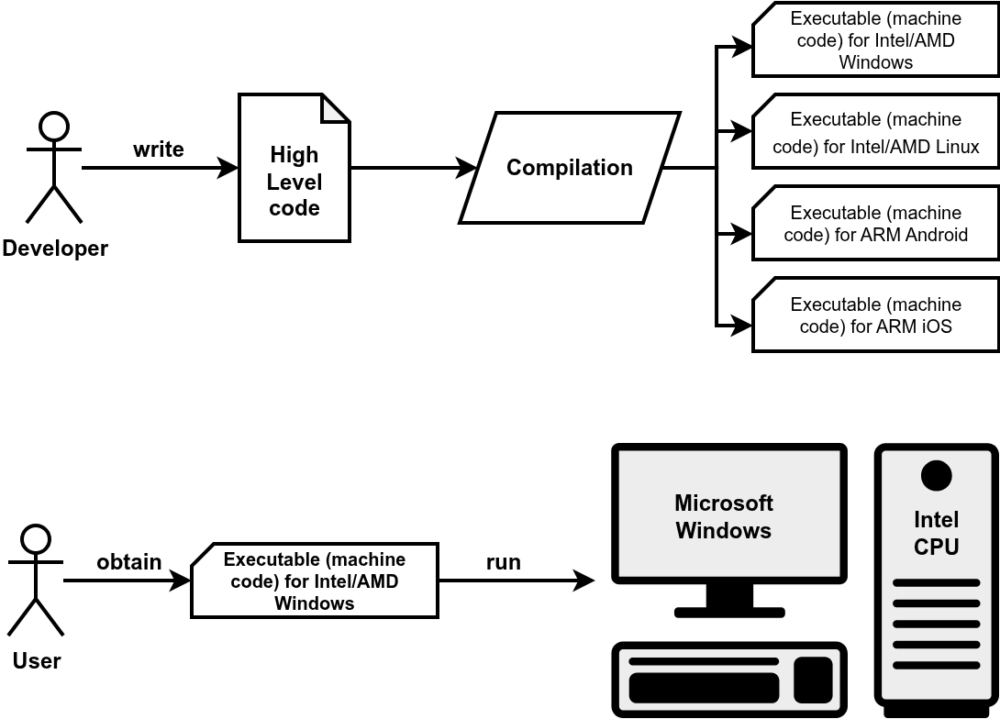</p> </div> </div> --- ## Interpretation <div class="content-center"> <div class="cell-center"> <p>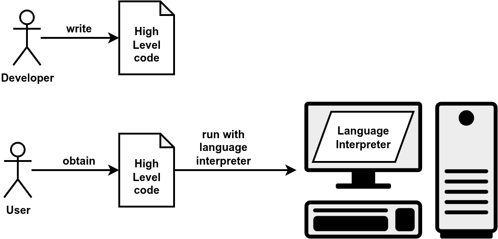</p> </div> </div> --- ## MANY Different High-Level Languages <div class="content-center"> <div class="cell-center"> <p>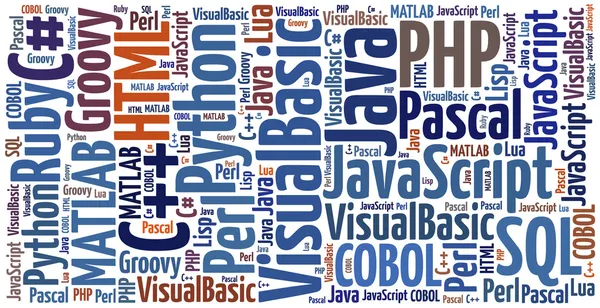</p> </div> <div class="fragment" data-fragment-index="0"> There are thousands of high-level languages: - They have been designed with different goals in mind - Some are general purpose, some are domain specific (e.g., web) - Some gives more control to the user, some hide more details - Some are compiled, some are interpreted </div> </div> --- ## Computers Run Complex Software Stacks <div class="content-center"> <br> Computers are expected to run **MANY** programs at the same time: - Browser to visit web pages (e.g., Chrome) - Office editor to write documents - File manager to organize files - Messaging applications (e.g., Telegram) - Video streaming client (e.g., Netflix) - ...and way more! <br/> <div class="fragment" data-fragment-index="0"> Moreover, computers are expected to: - embrace the concept of user accounts - provide access only after user authentication - protect files across users and prevent hardware damage - allow only admin users to install other programs - handle network connections, power management <br/> </div> <div class="fragment" data-fragment-index="1"> <div class="cell-center"> This is a **LOT** of **HARD** work: we need an **Operating System (OS)**. </div> </div> </div> --- <!-- .slide: data-state="break-blue hide-controls" --> # Operating Systems --- ## Operating Systems <div class="content-center"> Modern computing systems are based on **operating systems**, which are software designed to allow the execution of applications (programs) on the available hardware. <br/> <div class="fragment" data-fragment-index="0"> The main tasks of an operating system are: - **Process management** (creation, termination, CPU scheduling, etc.) - **Resource allocation** to processes (RAM, storage, network connections) - **User management** for multi-user systems (access privileges to files, programs) - **Inter-process communication** (locally or across networked systems) - **Error handling** during process execution or system operations - **Protection and security**, isolating processes to prevent interference with other processes, the OS, or hardware </div> </div> --- ## Overview of an Operating System <div class="content-center"> <div class="cell-center"> <p>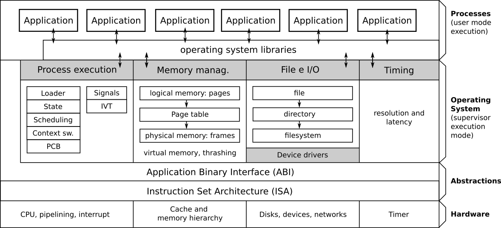</p> </div> <br/> - The **hardware** is the physical part of the computer, containing CPU, RAM, disks and other devices. - The **Instruction Set Architecture (ISA)** defines machine code instruction syntax and semantics. - The **Application Binary Interface (ABI)** defines conventions on how different programs can interact, reuse code, and interface with the operating system. </div> --- ## Kernel Mode vs User Mode <div class="content-center"> <br> <div class="cell-center"> </div> <br/> <div class="columns-container columns-top"> <div class="col"> The **operating system**: - has full control over the hardware: it runs in **supervisor (kernel) execution mode** - can execute **ALL** instructions from the ISA - controls which applications should run on the CPU cores at any time - plays the role of intermediary between applications and the hardware </div> <div class="col"> <div class="fragment" data-fragment-index="0"> In **user execution mode**: - Code can run only a limited (safe) subset of the ISA - Privileged instructions must be delegated to the OS following the ABI - Applications use system libraries to avoid reinventing the wheel </div> </div> </div> </div> --- ## Processes <div class="content-center"> A **process** is a running program in memory: <div class="cell-center"> <img src="img/process-concept.drawio.png" style="width: 75%;"> </div> <div class="fragment" data-fragment-index="0"> Key Process Concepts: - **Process ID (PID)**: Unique identifier for each process - **Parent/Child**: Processes can create other processes - **Memory**: Each process has its own memory space - **CPU Time**: Processes share CPU time </div> </div> --- ## CPU Cores and Multitasking <div class="content-center"> - CPUs traditionally had only a single core (and many still have few cores) - Yet we can run many applications simultaneously <br/> <div class="fragment" data-fragment-index="0"> <div class="cell-center"> ***How is this possible?*** </div> <br/> </div> <div class="fragment" data-fragment-index="1"> The Operating System creates the **illusion of parallel execution**: - CPU time is divided into small time slots (milliseconds) - Each application gets a turn to use the CPU - When a time slot expires, the OS performs *context switching* - Applications take turns using the CPU so quickly that users perceive them running simultaneously <br/> </div> <div class="fragment" data-fragment-index="2"> This technique is called **time-sharing** or **preemptive multitasking** and it is the essential trait of all modern operating systems. </div> </div> --- ## File Systems <div class="content-center"> Every operating system organizes files in a **hierarchical structure**, like a tree: <p>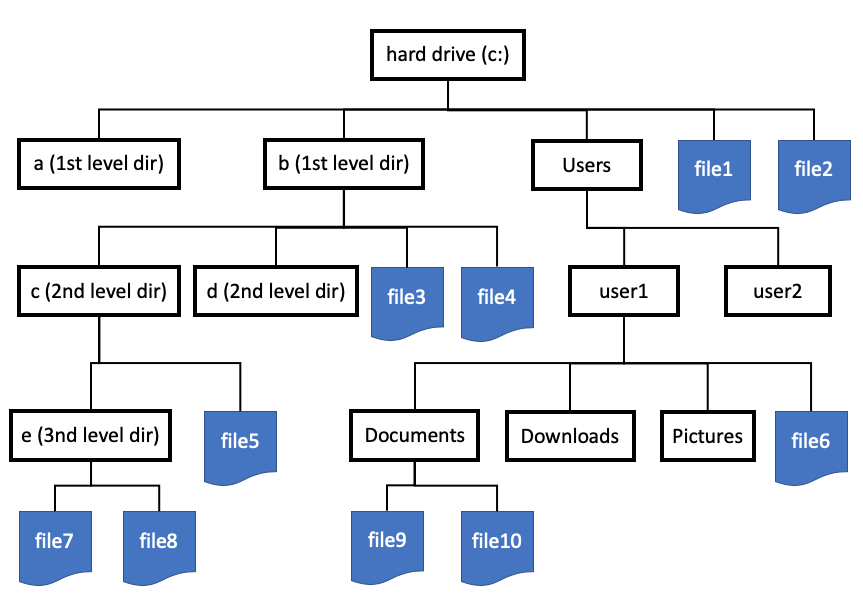</p> <div class="fragment" data-fragment-index="0"> Key Concepts: - **Root**: The top-level directory (starting point) - **Directories/Folders**: Containers that hold files and other directories - **Files**: Individual documents, programs, or data - **Path**: The route to reach a specific file or directory </div> </div> --- ## Application Installation Methods <div class="content-center"> Modern software can be installed and deployed in several ways: <br/> <div class="fragment" data-fragment-index="0"> 1. **Direct Downloads**: Executable files (.exe, .msi, .dmg) 2. **Application Stores**: Curated marketplaces 3. **Containers & Virtual Machines**: Isolated environments <br/> </div> <div class="fragment" data-fragment-index="1"> Each method has different **goals**, **advantages**, and **trade-offs** depending on: - Security requirements - Deployment complexity - Resource constraints - Maintenance needs <br/> </div> </div> --- <!-- .slide: data-state="break-blue hide-controls" --> # Virtual Machines --- ## Why Virtual Machines? <div class="content-center"> Sometimes we need to run software that is not compatible with our operating system, or we need to isolate applications from each other. <br/> <div class="fragment" data-fragment-index="0"> Key motivations: - **Isolation**: Applications run in their own environment without interfering with the host system - **Compatibility**: Run software designed for a different OS - **Security**: Containment of potential security vulnerabilities within the VM boundary - **Reproducibility**: Ensures consistent behavior regardless of where the application runs <br/> </div> <div class="fragment" data-fragment-index="1"> A **Virtual Machine (VM)** is a software emulation of a physical computer that runs a complete operating system. </div> </div> --- ## How Virtual Machines Work <div class="content-center"> A **hypervisor** (or Virtual Machine Monitor) is the software layer that creates and manages VMs: <br/> <div class="fragment" data-fragment-index="0"> - **Type 1 (Bare-metal)**: Runs directly on hardware (e.g., VMware ESXi, Microsoft Hyper-V, Xen) - Used in data centers and cloud environments - Better performance and security <br/> - **Type 2 (Hosted)**: Runs on top of a host operating system (e.g., VirtualBox, VMware Workstation, Parallels) - Used for development and testing - Easier to set up <br/> </div> <div class="fragment" data-fragment-index="1"> Each VM includes: - Its own **guest operating system** (can be different from the host) - **Virtual hardware** (virtual CPU, virtual RAM, virtual disk) - **Applications** running inside the guest OS <br/> </div> </div> --- ## Virtual Machines: Pros & Cons <div class="content-center"> Advantages: - **Complete isolation**: Full OS-level separation between VMs - **Run any OS**: Linux on Windows, Windows on macOS, etc. - **Snapshots**: Save and restore the entire state of a VM - **Security testing**: Safely analyze malware or test exploits <br/> <div class="fragment" data-fragment-index="0"> Disadvantages: - **Heavy resource usage**: Each VM runs a full OS (GBs of RAM, disk space) - **Slow startup**: Minutes to boot a full OS - **Performance overhead**: Hypervisor adds a layer of indirection - **Portability**: VM images are large and hypervisor-dependent </div> </div> --- ## What Happens Inside a VM <div class="content-center"> The hypervisor creates **virtual hardware** for each VM, abstracting the physical resources: <br/> <div class="fragment" data-fragment-index="0"> - **Virtual CPU (vCPU)**: one or more CPU cores allocated from the host's physical cores - **Virtual RAM**: a portion of the host's physical RAM dedicated to the VM - **Virtual Disk**: a file on the host's storage that appears as a hard drive to the guest OS - **Virtual Network Interface**: a software-emulated NIC that connects the VM to the network - **Virtual GPU** (optional): a portion of the host's GPU for graphics-intensive tasks <br/> </div> <div class="fragment" data-fragment-index="1"> <div class="alert alert-note">The guest OS is <b>unaware</b> that it is running inside a VM — it behaves as if it has exclusive access to real hardware. The hypervisor transparently intercepts and translates hardware requests.</div> </div> </div> --- ## Snapshots and Cloning <div class="content-center"> Two powerful features that distinguish VMs from running software directly on hardware: <br/> <div class="fragment" data-fragment-index="0"> **Snapshots**: capture the entire state of a VM (memory, disk, CPU registers) at a specific point in time. - Instantly **roll back** to a previous state if something goes wrong - Test risky operations (e.g., OS updates, malware analysis) with a safety net - Create multiple snapshots to compare different configurations <br/> </div> <div class="fragment" data-fragment-index="1"> **Cloning**: create an exact copy of a VM, including its OS, applications, and configuration. - Quickly spin up **identical environments** for testing or deployment - Distribute a pre-configured VM image to an entire team - Use a **golden image** as a template for new VMs </div> </div> --- ## VM Use Cases in Practice <div class="content-center"> <div class="fragment" data-fragment-index="0"> 1. **Server Consolidation**: run multiple server workloads on a single physical machine, reducing hardware costs and energy consumption 2. **Development and Testing**: developers can test software on different operating systems without needing separate physical machines 3. **Legacy Application Support**: run old software that requires a discontinued OS (e.g., Windows XP) inside a VM on modern hardware 4. **Security Analysis**: safely analyze malware, test exploits, or perform penetration testing inside an isolated VM — if the VM is compromised, the host remains safe 5. **Disaster Recovery**: VM snapshots and clones enable fast recovery from failures — restore a working state in minutes instead of hours </div> </div> --- ## VMs and Cloud Computing <div class="content-center"> VMs are the **foundation of cloud computing**. Cloud providers run thousands of physical servers, each hosting many VMs: <div class="fragment" data-fragment-index="0"> - **Infrastructure as a Service (IaaS)**: rent VMs on-demand from a cloud provider instead of buying physical servers - Amazon Web Services (AWS) → EC2 instances - Microsoft Azure → Azure Virtual Machines - Google Cloud Platform (GCP) → Compute Engine <br/> - Users can choose VM size (CPU cores, RAM, disk), OS, and geographic region - Pay only for what you use (per hour or per second) - Scale up or down in minutes <br/> </div> <div class="fragment" data-fragment-index="1"> <div class="alert alert-note">The "cloud" is essentially <b>someone else's computer</b> — running your VMs on their physical hardware.</div> </div> </div> --- <!-- .slide: data-state="break-blue hide-controls" --> # VirtualBox (local hypervisor) --- ## VirtualBox (startup screen) <div class="content-center"> <p>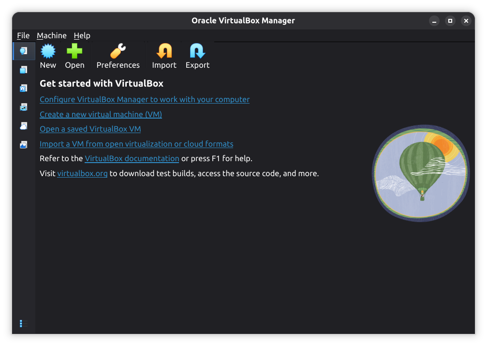</p> </div> --- ## Creating a VM: name and guest OS <div class="content-center"> <p>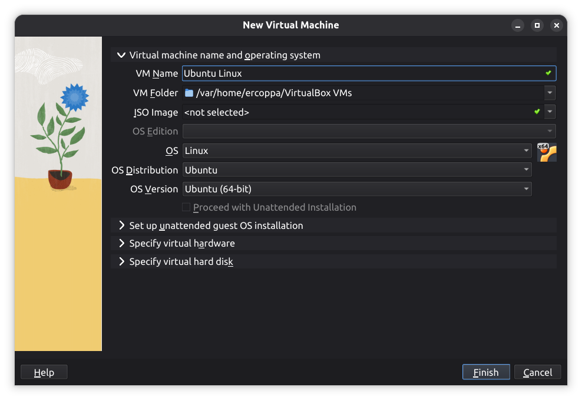</p> </div> --- ## Creating a VM: RAM and CPU <div class="content-center"> <p>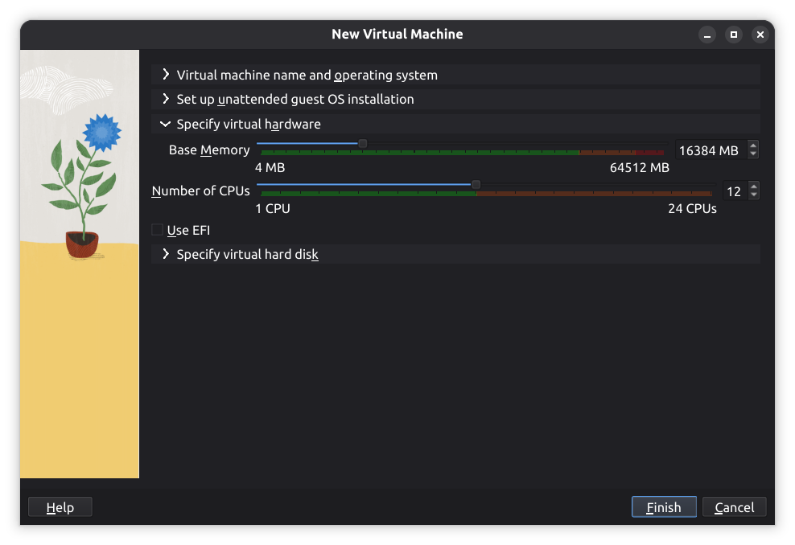</p> </div> --- ## Creating a VM: disk <div class="content-center"> <p>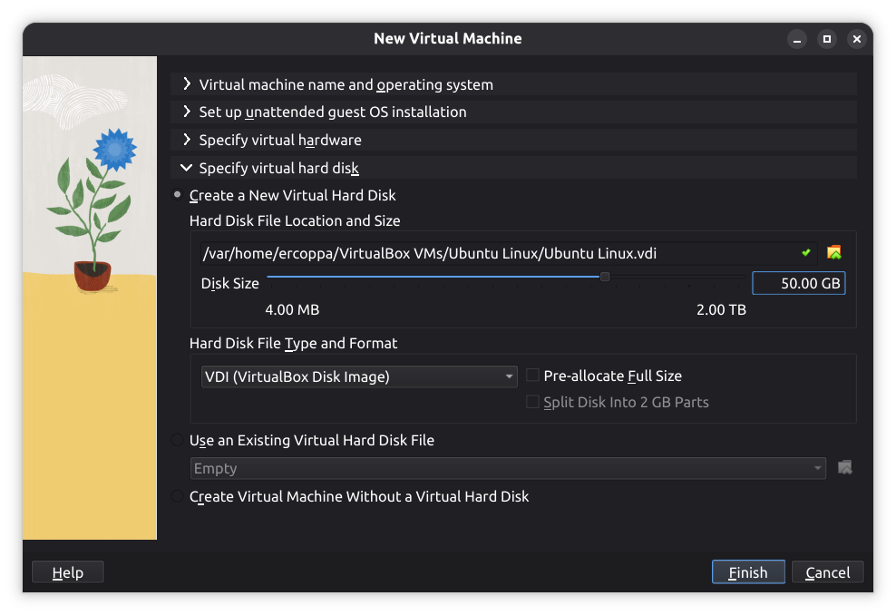</p> </div> --- ## Starting the VM <div class="content-center"> <p>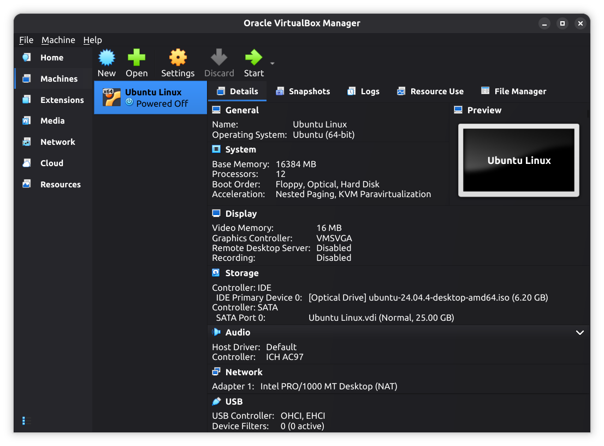</p> </div> --- ## Initial boot <div class="content-center"> <p>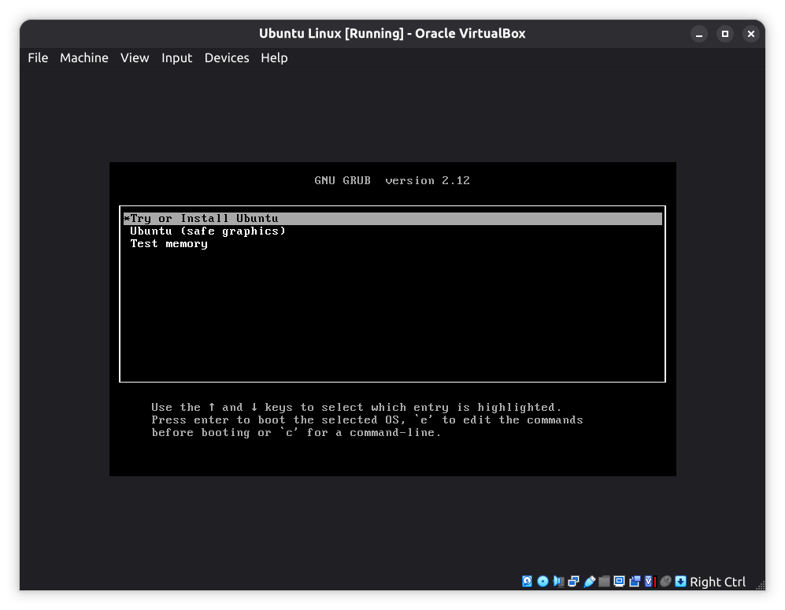</p> </div> <div class="footnotes"> <sup>*</sup> The keyboard inputs will be *grabbed* by the VM: use right CTRL to ungrab it. </div> --- ## Boot of the VM <div class="content-center"> <p>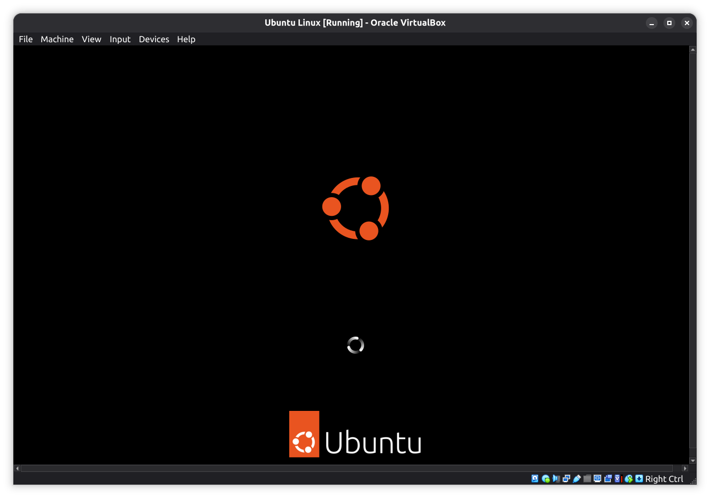</p> </div> --- ## Installation of the guest OS <div class="content-center"> <p>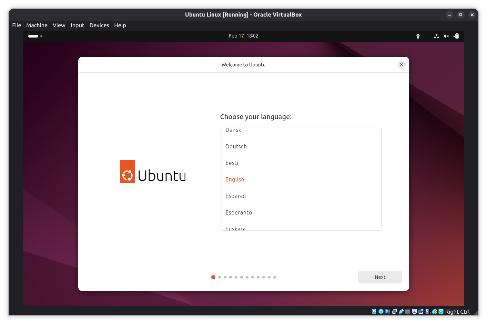</p> </div> --- ## Install the *guest additions* <div class="content-center"> <p>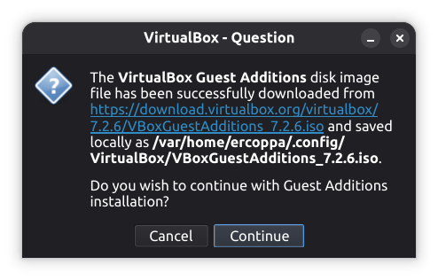</p> Guest additions improve the performance and integration of the VM: - Shared clipboard - Shared folders - Better mouse integration </div> --- ## Take snapshots and restore them <div class="content-center"> <p>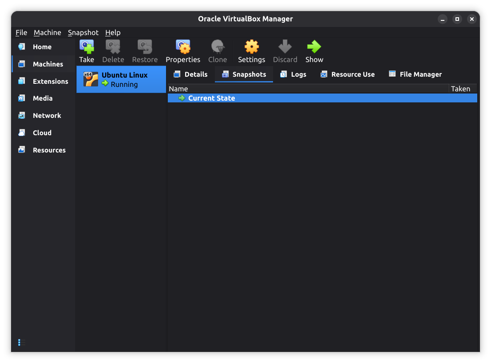</p> </div> --- ## Most OS can run in a VM... <div class="content-center"> <p>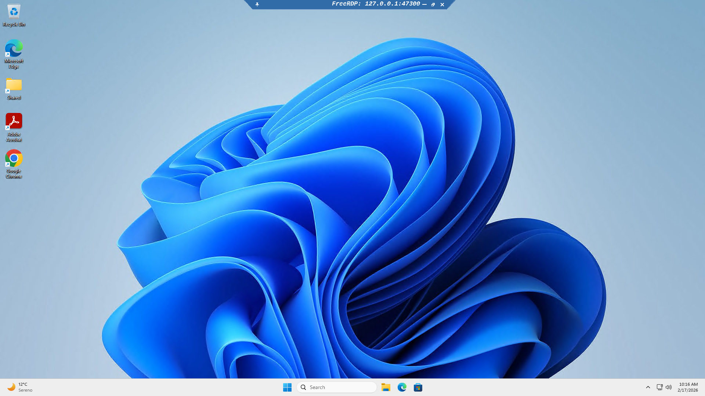</p> </div> <div class="footnotes"> <sup>*</sup> Even Mac OS can be virtualized but it is quite slow. </div> --- <!-- .slide: data-state="break-blue hide-controls" --> ## Amazon Web Services (cloud) --- ## EC2: AWS service to get raw VMs <div class="content-center"> <p>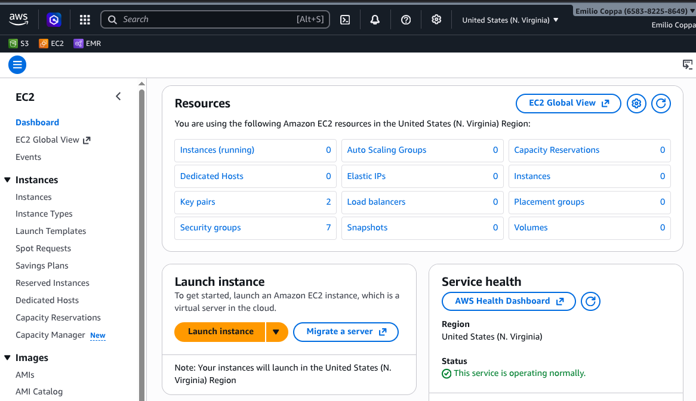</p> </div> --- ## Select the guest OS <div class="content-center"> <p>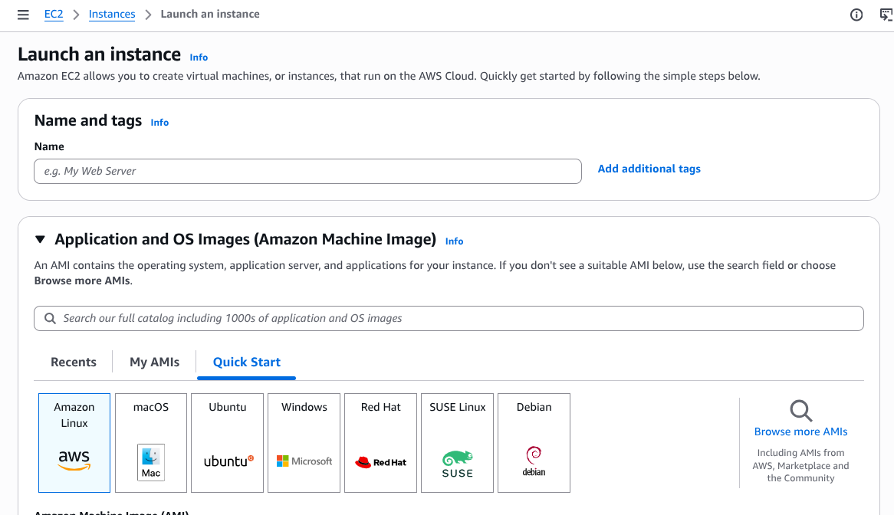</p> </div> --- ## Select CPU architecture and Instance Type <div class="content-center"> <p>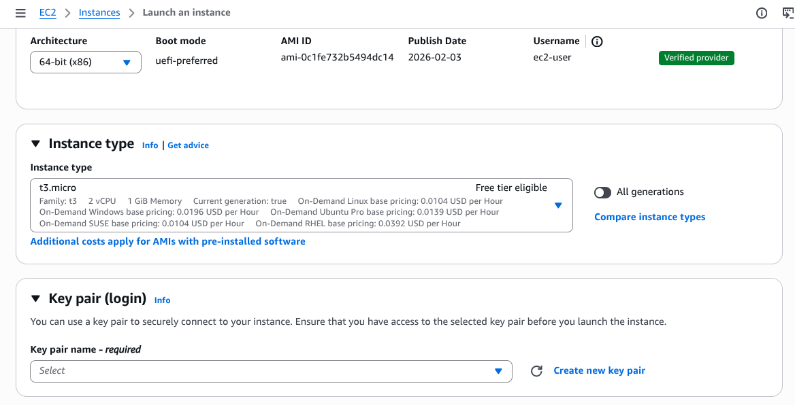</p> </div> --- ## MANY instance types... <div class="content-center"> A well known comparator: [**https://instances.vantage.sh/**](https://instances.vantage.sh/) <p>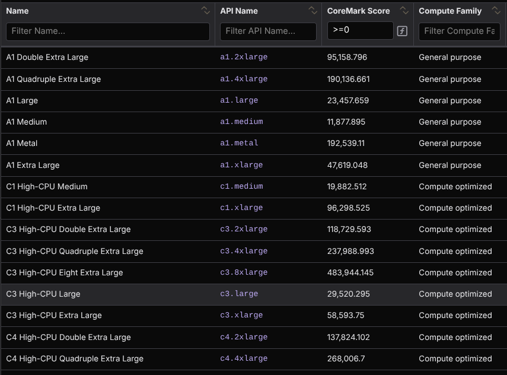</p> You can pick a VM with up to 896 CPU cores, 32TB of RAM, 36 GPUs, and 100TB of storage... </div> --- ## Pay as you use <div class="content-center"> You pay for everything on the cloud based on: - number of CPUs and their type - amount of memory - amount of storage and their type - amount of GPUs and their type - outbound traffic (transferred data in GB) - ... <br/> To maximize the cost-effectiveness, AWS has a live auction system where users bid for resources, saving up to 90% of the cost. If the bid is lower than the current price, AWS takes back the resource to sell it to another user. </div> --- <!-- .slide: data-state="break-blue hide-controls" --> # Containers --- ## Why Containers? <div class="content-center"> Virtual machines are powerful but heavy. What if we need isolation without the overhead of a full OS? <br/> <div class="fragment" data-fragment-index="0"> A **container** is a lightweight, standalone, executable package that includes everything needed to run a piece of software: - Application code - Runtime and libraries - System tools and settings <br/> </div> <div class="fragment" data-fragment-index="1"> Unlike VMs, containers **share the host OS kernel** and isolate the application processes from each other using OS-level features (namespaces, cgroups). </div> </div> --- ## Containers vs Virtual Machines <div class="content-center"> <div class="cell-center"> <img src="img/containers-vms.drawio.png" style="width: 65%;"> </div> <br/> <div class="fragment" data-fragment-index="0"> | Aspect | Virtual Machines | Containers | |--------|------------------|------------| | **Isolation** | Complete OS isolation | Process-level isolation | | **Resource Usage** | Heavy (full OS) | Lightweight (shared kernel) | | **Startup Time** | Minutes | Seconds | | **Portability** | Hypervisor dependent | Open format (OCI) | </div> </div> --- ## Containers: Pros & Cons <div class="content-center"> Advantages: - **Lightweight**: Share the host OS kernel, minimal overhead - **Fast startup**: Seconds instead of minutes - **Portability**: Run consistently across different environments - **Scalability**: Easy to deploy multiple instances - **Dependency management**: Self-contained packages avoid conflicts <br/> <div class="fragment" data-fragment-index="0"> Disadvantages: - **Weaker isolation**: Shared kernel means less separation than VMs - **Linux-centric**: On macOS and Windows, Docker requires a lightweight Linux VM - **Not ideal for GUIs**: Primarily used for non-graphical applications - **Security concerns**: A kernel vulnerability could affect all containers </div> </div> --- ## Docker: The De Facto Standard <div class="content-center"> For most users, containers means using **Docker**: <br/> <div class="fragment" data-fragment-index="0"> - **Docker Image**: A read-only template with instructions for creating a container (like a recipe) - **Docker Container**: A running instance of an image (like the dish) - **Dockerfile**: A text file with instructions to build an image - **Docker Hub**: A public registry for sharing images <br/> </div> <div class="fragment" data-fragment-index="1"> Containers have become the industry standard for deploying services in cloud environments, especially web services, due to their lightweight nature and efficient resource utilization. </div> </div> --- ## The Deployment Challenge <div class="content-center"> <div class="cell-center"> <p>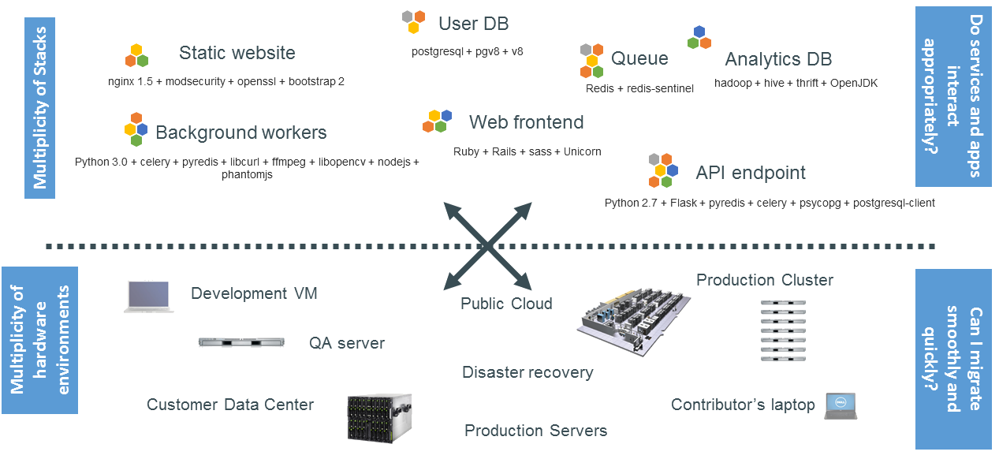</p> </div> <br/> <div class="fragment" data-fragment-index="0"> A typical application stack involves **many different services** (web frontend, database, queue, workers...) each with their own dependencies, deployed across **many different environments** (developer laptop, QA server, production cluster, cloud...). </div> </div> <div class="footnotes"> <sup>*</sup> Image source: [pointful.github.io/docker-intro](https://pointful.github.io/docker-intro/#/18) </div> --- ## Docker: A Shipping Container for Code <div class="content-center"> <div class="cell-center"> <p>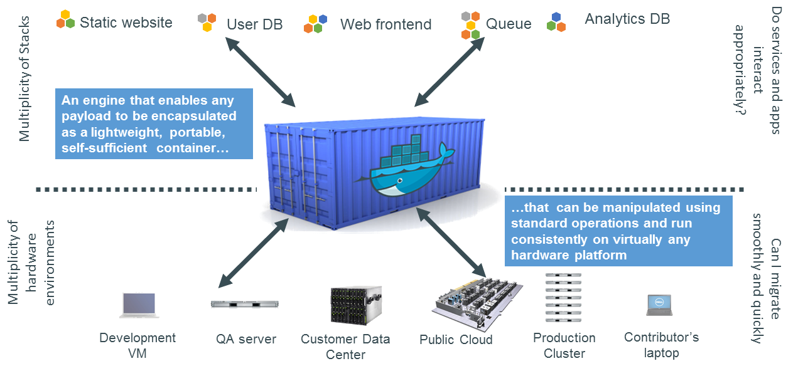</p> </div> <br/> <div class="fragment" data-fragment-index="0"> Just like **shipping containers** standardized global trade by providing a uniform way to transport any goods on any vessel, Docker provides a **standard container format** for software: - Package any application with all its dependencies - Run it consistently on any machine that has Docker installed </div> </div> <div class="footnotes"> <sup>*</sup> Image source: [pointful.github.io/docker-intro](https://pointful.github.io/docker-intro/#/18) </div> --- ## How Docker Works <div class="content-center"> <div class="cell-center"> <p>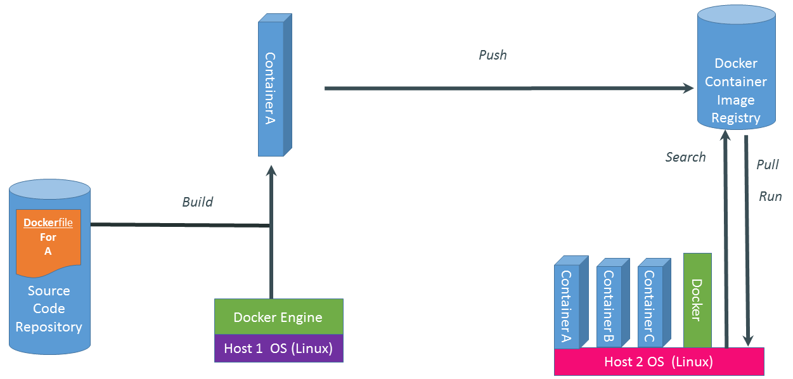</p> </div> <br/> <div class="fragment" data-fragment-index="0"> 1. A **Dockerfile** describes how to build an image 2. `docker build` creates the image from the Dockerfile 3. `docker push` uploads the image to a **registry** (e.g., Docker Hub) 4. On another machine: `docker pull` downloads the image 5. `docker run` starts a container from the image </div> </div> <div class="footnotes"> <sup>*</sup> Image source: [pointful.github.io/docker-intro](https://pointful.github.io/docker-intro/#/18) </div> --- ## The Dockerfile <div class="content-center"> A **Dockerfile** is a text file with step-by-step instructions to build a Docker image: <div class="fragment" data-fragment-index="0"> ```dockerfile # Start from an official base image FROM python:3.11-slim # Set the working directory inside the container WORKDIR /app # Copy dependency file and install dependencies COPY requirements.txt . RUN pip install -r requirements.txt # Copy the application code COPY . . # Define the command to run when the container starts CMD ["python", "app.py"] ``` <br/> </div> <div class="fragment" data-fragment-index="1"> <div class="alert alert-note">Each instruction creates a <b>layer</b> in the image. Layers are cached and reused, making subsequent builds faster.</div> </div> </div> --- ## Dockerfile Directives <div class="content-center"> | Directive | Purpose | Example | |-----------|---------|---------| | `FROM` | Base image to start from | `FROM python:3.11-slim` | | `WORKDIR` | Set the working directory inside the container | `WORKDIR /app` | | `COPY` | Copy files from host into the image | `COPY . /app` | | `ADD` | Like `COPY`, but can also extract archives and fetch URLs | `ADD data.tar.gz /data` | | `RUN` | Execute a command during the build (e.g., install packages) | `RUN pip install flask` | | `ENV` | Set an environment variable | `ENV APP_PORT=8080` | | `EXPOSE` | Document which port the container listens on | `EXPOSE 8080` | | `CMD` | Default command to run when the container starts | `CMD ["python", "app.py"]` | | `ENTRYPOINT` | Like `CMD`, but cannot be easily overridden | `ENTRYPOINT ["python"]` | <br/> <div class="fragment" data-fragment-index="0"> <div class="alert alert-note"><code>CMD</code> vs <code>ENTRYPOINT</code>: - <code>CMD</code> provides defaults that can be <b>overridden</b> by passing arguments to <code>docker run</code> - <code>ENTRYPOINT</code> sets a fixed executable — arguments from <code>docker run</code> are <b>appended</b> to it - They can be combined: <code>ENTRYPOINT ["python"]</code> + <code>CMD ["app.py"]</code> → runs <code>python app.py</code> by default, but <code>docker run myimage script.py</code> runs <code>python script.py</code></div> </div> </div> --- ## Building and Sharing Images <div class="content-center"> `docker build` creates an image from a Dockerfile: ```bash # Build an image and tag it with a name docker build -t my-app:1.0 . ``` <br/> <div class="fragment" data-fragment-index="0"> `docker pull` downloads an image from a registry (e.g., Docker Hub): ```bash # Download an official image docker pull ubuntu:22.04 # Download a community image docker pull nginx:latest ``` </div> <div class="fragment" data-fragment-index="1"> <div class="alert alert-note">Docker Hub hosts <b>thousands of ready-to-use images</b>: databases (PostgreSQL, MySQL), web servers (Nginx, Apache), programming languages (Python, Node.js), and full applications.</div> </div> </div> --- ## Running Containers <div class="content-center"> `docker run` creates and starts a container from an image: ```bash # Run a container interactively with a shell docker run -it ubuntu:22.04 /bin/bash # Run a web server in the background, mapping port 8080 docker run -d -p 8080:80 --name my-web nginx:latest ``` <br/> <div class="fragment" data-fragment-index="0"> `docker exec` runs a command inside a **running** container: ```bash # Open a shell inside a running container docker exec -it my-web /bin/bash # Run a single command inside the container docker exec my-web cat /etc/nginx/nginx.conf ``` </div> </div> --- ## Stopping and Removing Containers <div class="content-center"> `docker stop` gracefully stops a running container (sends SIGTERM, then SIGKILL after timeout): ```bash docker stop my-web ``` <br/> <div class="fragment" data-fragment-index="0"> `docker kill` immediately terminates a container (sends SIGKILL): ```bash docker kill my-web ``` <br/> </div> <div class="fragment" data-fragment-index="1"> | Command | Effect | |---------|--------| | `docker stop` | Graceful shutdown (app can clean up) | | `docker kill` | Immediate termination (no cleanup) | | `docker rm` | Remove a stopped container | | `docker rmi` | Remove an image from disk | </div> </div> --- ## Copying Files: `docker cp` <div class="content-center"> `docker cp` copies files between the host and a container: ```bash # Copy a file FROM the container TO the host docker cp my-web:/etc/nginx/nginx.conf ./nginx.conf # Copy a file FROM the host TO the container docker cp ./index.html my-web:/usr/share/nginx/html/ ``` <br/> <div class="fragment" data-fragment-index="0"> This is useful for: - Extracting logs, data, or configuration files from a container - Injecting configuration or data files into a running container - Debugging: inspecting files inside a container without `exec` </div> </div> --- ## Docker Compose <div class="content-center"> Real applications often consist of **multiple services** (web server, database, cache, ...). Managing them one by one with `docker run` is tedious. <div class="fragment" data-fragment-index="0"> `docker compose` uses a YAML file to define and run **multi-container applications**: ```yaml # docker-compose.yml services: web: build: . ports: - "8080:80" depends_on: - db db: image: postgres:15 environment: POSTGRES_PASSWORD: secret volumes: - db-data:/var/lib/postgresql/data volumes: db-data: ``` </div> </div> --- <div class="content-center"> ```bash # Start all services defined in docker-compose.yml docker compose up # Start in background (detached mode) docker compose up -d # Stop and remove all containers docker compose down ``` <br/> <div class="fragment" data-fragment-index="0"> <div class="alert alert-note">With a single command, Docker Compose builds images, creates networks, and starts all containers in the correct order based on their dependencies.</div> </div> </div> --- ## Docker Compose Directives <div class="content-center"> The `docker-compose.yml` file uses these key directives under each service: <br/> | Directive | Purpose | Example | |-----------|---------|---------| | `image` | Use a pre-built image from a registry | `image: postgres:15` | | `build` | Build the image from a Dockerfile | `build: .` | | `ports` | Map host ports to container ports | `ports: ["8080:80"]` | | `volumes` | Mount volumes or bind mounts | `volumes: ["db-data:/var/lib/data"]` | | `environment` | Set environment variables | `environment: {DB_HOST: db}` | | `depends_on` | Start this service after another | `depends_on: [db]` | | `restart` | Restart policy on failure | `restart: unless-stopped` | | `networks` | Attach the service to custom networks | `networks: [frontend, backend]` | | `command` | Override the default `CMD` of the image | `command: ["--debug"]` | </div> --- <div class="content-center"> Top-level directives define shared resources across all services: ```yaml volumes: db-data: # named volume, persists across container restarts networks: frontend: # custom network for web-facing services backend: # isolated network for internal services ``` </div> --- ## Containers Are Ephemeral <div class="content-center"> A container is designed to be **ephemeral** — it can be stopped, destroyed, and replaced at any time. <br/> <div class="fragment" data-fragment-index="0"> When a container is removed, **all data written inside it is lost**: - Files created during execution - Database records - User uploads - Application logs <br/> </div> <div class="fragment" data-fragment-index="1"> <div class="alert alert-warning">This is <b>by design</b>: containers should be disposable and reproducible. You should be able to destroy a container and spin up a new one from the same image without losing important data.</div> <br/> </div> <div class="fragment" data-fragment-index="2"> <div class="cell-center"> ***So where do we store persistent data?*** </div> </div> </div> --- ## Docker Volumes <div class="content-center"> **Volumes** are the recommended way to persist data generated by and used by Docker containers. They are stored on the host filesystem, **outside** the container. <br/> <div class="fragment" data-fragment-index="0"> ```bash # Create a named volume docker volume create my-data # Run a container with a volume mounted at /data docker run -d -v my-data:/data --name my-app my-image # Bind mount: map a host directory into the container docker run -d -v /home/user/project:/app my-image ``` </div> <div class="fragment" data-fragment-index="1"> - **Named volumes** (`-v my-data:/data`): managed by Docker, persist even after the container is removed - **Bind mounts** (`-v /host/path:/container/path`): map a specific host directory into the container — useful for development (edit code on the host, run it in the container) <br/> </div> <div class="fragment" data-fragment-index="2"> <div class="alert alert-note">Volumes are essential for databases, file uploads, logs, and any data that must survive container restarts or replacements.</div> </div> </div> --- ## Updating a Containerized Application <div class="content-center"> Because containers are ephemeral and data lives in **volumes**, updating an application is straightforward: <br/> <div class="fragment" data-fragment-index="0"> ```bash # 1. Pull the new version of the image docker pull my-app:2.0 # 2. Stop and remove the old container docker stop my-app && docker rm my-app # 3. Start a new container reusing the same volume docker run -d -v my-data:/data --name my-app my-app:2.0 ``` <br/> </div> <div class="fragment" data-fragment-index="1"> The **data persists** in the volume across container replacements. The new container picks up exactly where the old one left off — no migration, no manual copy. </div> </div> --- <!-- .slide: data-state="break-blue hide-controls" --> # Beyond Docker --- ## Kubernetes <div class="content-center"> Running a few containers with `docker compose` works fine for small deployments. But what happens when you need to run **hundreds or thousands of containers** across **many machines**? <br/> <div class="fragment" data-fragment-index="0"> **Kubernetes** (K8s) is an open-source **container orchestration** platform, originally developed by Google: - Automatically **deploys**, **scales**, and **manages** containerized applications across a cluster of machines - Handles **load balancing**, **self-healing** (restarts failed containers), and **rolling updates** - The de facto standard for running containers in production at scale </div> </div> --- ## Kubernetes: Key Concepts <div class="content-center"> - **Cluster**: a set of machines (nodes) that run containerized applications managed by Kubernetes - **Pod**: the smallest deployable unit — one or more containers that share storage and network - **Service**: a stable network endpoint that routes traffic to a set of pods - **Deployment**: defines how many replicas of a pod should run and how to update them <br/> <div class="fragment" data-fragment-index="0"> All major cloud providers offer managed Kubernetes services: - **Amazon EKS** (Elastic Kubernetes Service) - **Google GKE** (Google Kubernetes Engine) - **Azure AKS** (Azure Kubernetes Service) </div> </div> --- ## LXC: System Containers <div class="content-center"> Docker containers are **application containers**: they typically run a single process or service. But there is another approach: <br/> <div class="fragment" data-fragment-index="0"> **LXC** (Linux Containers) provides **system containers** — they behave like a full Linux system: - Run a complete **init system** (systemd), multiple services, and background daemons - Feel like a lightweight VM but **share the host kernel** (no hypervisor overhead) - Have their own network stack, users, processes, and filesystem <br/> </div> </div> --- <div class="content-center"> | | Docker (Application Container) | LXC (System Container) | |---|---|---| | **Runs** | A single app/process | A full OS environment | | **Init system** | No (single `CMD`) | Yes (systemd, cron, sshd...) | | **Use case** | Microservices, CI/CD | Lightweight VM replacement | | **Persistence** | Ephemeral by design | Persistent by default | | **Image ecosystem** | Docker Hub (huge) | OS templates (Ubuntu, Debian...) | <br/> <br/> <div class="fragment" data-fragment-index="0"> <div class="alert alert-note">LXC is ideal when you need the <b>flexibility of a full OS</b> (e.g., running multiple services, SSH access, system-level testing) but want the <b>performance and density</b> of containers instead of VMs.</div> </div> </div>